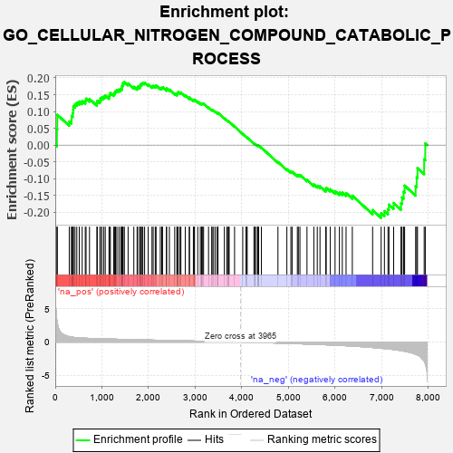
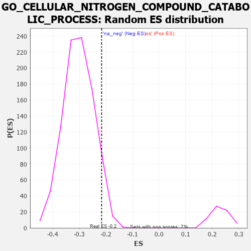

| | | Dataset | 7d |
| Phenotype | NoPhenotypeAvailable |
| Upregulated in class | na_neg |
| GeneSet | GO_CELLULAR_NITROGEN_COMPOUND_CATABOLIC_PROCESS |
| Enrichment Score (ES) | -0.21660377 |
| Normalized Enrichment Score (NES) | -0.7131263 |
| Nominal p-value | 0.95074946 |
| FDR q-value | 1.0 |
| FWER p-Value | 1.0 |
Table: GSEA Results Summary

Fig 1: Enrichment plot: GO_CELLULAR_NITROGEN_COMPOUND_CATABOLIC_PROCESS
Profile of the Running ES Score & Positions of GeneSet Members on the Rank Ordered List
| PROBE | GENE SYMBOL | GENE_TITLE | RANK IN GENE LIST | RANK METRIC SCORE | RUNNING ES | CORE ENRICHMENT | | 1 | SPO11 | | | 35 | 3.371 | 0.0472 | No |
| 2 | PCBP4 | | | 44 | 2.875 | 0.0902 | No |
| 3 | ADPRM | | | 300 | 0.822 | 0.0702 | No |
| 4 | CNOT7 | | | 348 | 0.750 | 0.0757 | No |
| 5 | GSK3A | | | 351 | 0.745 | 0.0869 | No |
| 6 | POP1 | | | 376 | 0.720 | 0.0948 | No |
| 7 | AXIN2 | | | 383 | 0.713 | 0.1050 | No |
| 8 | BAX | | | 387 | 0.711 | 0.1155 | No |
| 9 | MLH1 | | | 423 | 0.679 | 0.1214 | No |
| 10 | CNOT6 | | | 462 | 0.655 | 0.1266 | No |
| 11 | CNOT2 | | | 514 | 0.625 | 0.1296 | No |
| 12 | APEX1 | | | 577 | 0.604 | 0.1310 | No |
| 13 | SMG9 | | | 643 | 0.579 | 0.1315 | No |
| 14 | PARN | | | 660 | 0.572 | 0.1382 | No |
| 15 | WDR61 | | | 734 | 0.549 | 0.1373 | No |
| 16 | HMGB2 | | | 892 | 0.507 | 0.1251 | No |
| 17 | NSUN2 | | | 901 | 0.506 | 0.1318 | No |
| 18 | EDC4 | | | 957 | 0.494 | 0.1323 | No |
| 19 | ZPR1 | | | 967 | 0.491 | 0.1387 | No |
| 20 | DEDD2 | | | 999 | 0.484 | 0.1422 | No |
| 21 | AKT1 | | | 1040 | 0.476 | 0.1443 | No |
| 22 | AIFM1 | | | 1072 | 0.469 | 0.1476 | No |
| 23 | PSMD7 | | | 1152 | 0.454 | 0.1444 | No |
| 24 | GRSF1 | | | 1164 | 0.452 | 0.1499 | No |
| 25 | PSMD2 | | | 1181 | 0.450 | 0.1548 | No |
| 26 | SMG8 | | | 1251 | 0.438 | 0.1527 | No |
| 27 | CNOT3 | | | 1274 | 0.435 | 0.1566 | No |
| 28 | DKC1 | | | 1292 | 0.431 | 0.1610 | No |
| 29 | NRDE2 | | | 1320 | 0.425 | 0.1641 | No |
| 30 | GALT | | | 1363 | 0.416 | 0.1651 | No |
| 31 | NOCT | | | 1402 | 0.409 | 0.1665 | No |
| 32 | LSM4 | | | 1426 | 0.405 | 0.1698 | No |
| 33 | RBM10 | | | 1430 | 0.404 | 0.1756 | No |
| 34 | LSM6 | | | 1444 | 0.402 | 0.1800 | No |
| 35 | HBS1L | | | 1454 | 0.399 | 0.1850 | No |
| 36 | TAF15 | | | 1481 | 0.393 | 0.1877 | No |
| 37 | BOLL | | | 1561 | 0.381 | 0.1835 | No |
| 38 | TNPO1 | | | 1684 | 0.359 | 0.1734 | No |
| 39 | LSM7 | | | 1754 | 0.344 | 0.1699 | No |
| 40 | AGO2 | | | 1767 | 0.343 | 0.1736 | No |
| 41 | PSMD4 | | | 1811 | 0.335 | 0.1732 | No |
| 42 | FMR1 | | | 1816 | 0.334 | 0.1778 | No |
| 43 | LSM2 | | | 1829 | 0.332 | 0.1814 | No |
| 44 | PSMD6 | | | 1858 | 0.326 | 0.1828 | No |
| 45 | DCP1A | | | 1877 | 0.323 | 0.1855 | No |
| 46 | DDX6 | | | 1915 | 0.318 | 0.1856 | No |
| 47 | MYEF2 | | | 1992 | 0.306 | 0.1806 | No |
| 48 | DDX49 | | | 2073 | 0.295 | 0.1749 | No |
| 49 | LSM1 | | | 2098 | 0.291 | 0.1763 | No |
| 50 | PSME4 | | | 2143 | 0.285 | 0.1750 | No |
| 51 | CNOT4 | | | 2161 | 0.283 | 0.1772 | No |
| 52 | PSMF1 | | | 2251 | 0.268 | 0.1699 | No |
| 53 | LSM3 | | | 2282 | 0.263 | 0.1701 | No |
| 54 | NBAS | | | 2299 | 0.260 | 0.1721 | No |
| 55 | NCBP2 | | | 2383 | 0.248 | 0.1653 | No |
| 56 | PELO | | | 2386 | 0.247 | 0.1688 | No |
| 57 | FEN1 | | | 2446 | 0.237 | 0.1649 | No |
| 58 | PSMD5 | | | 2560 | 0.218 | 0.1538 | No |
| 59 | PDE12 | | | 2608 | 0.211 | 0.1511 | No |
| 60 | PATL1 | | | 2610 | 0.210 | 0.1542 | No |
| 61 | PUM2 | | | 2627 | 0.209 | 0.1553 | No |
| 62 | EIF3E | | | 2634 | 0.207 | 0.1577 | No |
| 63 | MUS81 | | | 2673 | 0.202 | 0.1560 | No |
| 64 | CSDE1 | | | 2693 | 0.200 | 0.1566 | No |
| 65 | XRN1 | | | 2786 | 0.185 | 0.1477 | No |
| 66 | DCPS | | | 2873 | 0.170 | 0.1393 | No |
| 67 | CIRBP | | | 2876 | 0.170 | 0.1417 | No |
| 68 | XPO1 | | | 2960 | 0.156 | 0.1335 | No |
| 69 | RNH1 | | | 2977 | 0.153 | 0.1338 | No |
| 70 | DUT | | | 2985 | 0.152 | 0.1352 | No |
| 71 | PAN3 | | | 3054 | 0.142 | 0.1287 | No |
| 72 | GPX1 | | | 3109 | 0.135 | 0.1239 | No |
| 73 | OGG1 | | | 3135 | 0.132 | 0.1227 | No |
| 74 | SMG7 | | | 3141 | 0.131 | 0.1241 | No |
| 75 | ERN2 | | | 3160 | 0.129 | 0.1238 | No |
| 76 | PSMD9 | | | 3179 | 0.125 | 0.1234 | No |
| 77 | SMG5 | | | 3285 | 0.108 | 0.1116 | No |
| 78 | RBM8A | | | 3355 | 0.096 | 0.1043 | No |
| 79 | PDE9A | | | 3360 | 0.095 | 0.1053 | No |
| 80 | TUT4 | | | 3394 | 0.090 | 0.1024 | No |
| 81 | SARM1 | | | 3432 | 0.086 | 0.0990 | No |
| 82 | CNOT1 | | | 3473 | 0.081 | 0.0952 | No |
| 83 | ERI1 | | | 3486 | 0.079 | 0.0948 | No |
| 84 | ITPA | | | 3487 | 0.079 | 0.0961 | No |
| 85 | UPP2 | | | 3624 | 0.056 | 0.0795 | No |
| 86 | ABCD1 | | | 3677 | 0.047 | 0.0736 | No |
| 87 | DHX9 | | | 3693 | 0.044 | 0.0724 | No |
| 88 | HSF1 | | | 3718 | 0.039 | 0.0699 | No |
| 89 | CASC3 | | | 3727 | 0.037 | 0.0695 | No |
| 90 | SMG1 | | | 3843 | 0.021 | 0.0551 | No |
| 91 | HDC | | | 4018 | -0.011 | 0.0331 | No |
| 92 | PDE4B | | | 4089 | -0.022 | 0.0245 | No |
| 93 | PDE8A | | | 4097 | -0.023 | 0.0240 | No |
| 94 | MTOR | | | 4114 | -0.025 | 0.0223 | No |
| 95 | PCID2 | | | 4258 | -0.051 | 0.0048 | No |
| 96 | PSME3 | | | 4280 | -0.056 | 0.0030 | No |
| 97 | TDG | | | 4290 | -0.058 | 0.0027 | No |
| 98 | NUDT9 | | | 4333 | -0.066 | -0.0016 | No |
| 99 | MTHFS | | | 4337 | -0.066 | -0.0010 | No |
| 100 | PDE7A | | | 4355 | -0.069 | -0.0021 | No |
| 101 | ACADL | | | 4360 | -0.069 | -0.0016 | No |
| 102 | PRR5L | | | 4418 | -0.080 | -0.0076 | No |
| 103 | PDE1A | | | 4773 | -0.152 | -0.0505 | No |
| 104 | DXO | | | 4964 | -0.191 | -0.0718 | No |
| 105 | NUDT3 | | | 5050 | -0.209 | -0.0794 | No |
| 106 | PDE4C | | | 5076 | -0.219 | -0.0793 | No |
| 107 | ENPP4 | | | 5189 | -0.245 | -0.0898 | No |
| 108 | ATM | | | 5210 | -0.249 | -0.0885 | No |
| 109 | SND1 | | | 5244 | -0.256 | -0.0888 | No |
| 110 | MGAT1 | | | 5395 | -0.294 | -0.1035 | No |
| 111 | SIDT2 | | | 5542 | -0.331 | -0.1170 | No |
| 112 | LARP1 | | | 5616 | -0.349 | -0.1210 | No |
| 113 | PSMD1 | | | 5674 | -0.367 | -0.1227 | No |
| 114 | ADA | | | 5798 | -0.405 | -0.1321 | No |
| 115 | PAN2 | | | 5807 | -0.408 | -0.1269 | No |
| 116 | SET | | | 5895 | -0.434 | -0.1314 | No |
| 117 | TUT7 | | | 5997 | -0.471 | -0.1370 | No |
| 118 | UBB | | | 6090 | -0.503 | -0.1411 | No |
| 119 | ROCK1 | | | 6152 | -0.520 | -0.1409 | No |
| 120 | RGN | | | 6233 | -0.547 | -0.1427 | No |
| 121 | ACMSD | | | 6367 | -0.603 | -0.1505 | No |
| 122 | KYNU | | | 6802 | -0.816 | -0.1934 | No |
| 123 | PDE2A | | | 6985 | -0.927 | -0.2024 | Yes |
| 124 | FTCD | | | 7055 | -0.970 | -0.1964 | Yes |
| 125 | DPYD | | | 7132 | -1.019 | -0.1905 | Yes |
| 126 | DDX5 | | | 7152 | -1.037 | -0.1770 | Yes |
| 127 | REXO4 | | | 7253 | -1.126 | -0.1725 | Yes |
| 128 | UBC | | | 7410 | -1.274 | -0.1729 | Yes |
| 129 | KMO | | | 7432 | -1.308 | -0.1556 | Yes |
| 130 | HELZ2 | | | 7466 | -1.356 | -0.1390 | Yes |
| 131 | XRN2 | | | 7488 | -1.384 | -0.1205 | Yes |
| 132 | DCP2 | | | 7724 | -1.833 | -0.1224 | Yes |
| 133 | CASP3 | | | 7747 | -1.902 | -0.0961 | Yes |
| 134 | PDE4D | | | 7764 | -1.944 | -0.0684 | Yes |
| 135 | PSMD3 | | | 7907 | -2.887 | -0.0423 | Yes |
| 136 | PSMD8 | | | 7931 | -3.286 | 0.0051 | Yes |
Table: GSEA details [plain text format]

Fig 2: GO_CELLULAR_NITROGEN_COMPOUND_CATABOLIC_PROCESS: Random ES distribution
Gene set null distribution of ES for GO_CELLULAR_NITROGEN_COMPOUND_CATABOLIC_PROCESS